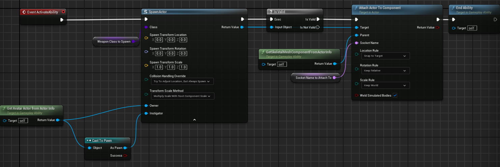

Warrior项目笔记 1
Nov 5, 2025
24 mins read
Hard Reference & Soft Reference
Reference Viewer 引用查看器显示的白色线条是硬引用关系，粉色线条是软引用关系。比如一个蓝图在属性里引用了某个材质、贴图、Mesh等。
如下图所示，右边的所有内容是角色的依赖项，左边的所有内容依赖于角色资产：

硬引用示例：
- 蓝图的
Cast to XXXX节点会导致硬引用对象，即使存在但不使用该节点也会硬引用cast对象。这是因为：当你使用Cast To BP_XXX节点时，蓝图编译器会在生成的 bytecode 里记录该蓝图类的引用（UBlueprintGeneratedClass对象）以及SpawnActorFromClass也会导致硬引用。 - 蓝图变量引用资源或者继承自另一个BP类。
- C++中使用FObjectFinder，构造期强制加载资源。
- DataTable / DataAsset 直接存放UObject*
….
总之，只要蓝图或C++中有明确的对象引用或类引用（即编译器能追踪到的UObject、UClass），都会形成硬引用。
SizeMap 如下图所示， BP_ThirdPersonCharacter 占据了207.4MB，其中SKM_Quinn_Simple占据了198.6MB，像一个盒子层层嵌套，你可以观察到内存占比最大的是哪个引用：

硬引用和软引用的区别是 —— 硬引用可以更快速的访问对象，对象已经被加载到内存中，所以可以直接使用；而软引用可以减少内存占用，但是速度会比较慢，如果被使用，先要访问是否存在，才能访问它指向的对象。所以相当于内存换取了速度。
避免硬引用的方法
使用软引用（SoftObjectPtr / SoftClassPtr）、接口可以避免硬引用、使用字符串路径 + 动态加载。
什么时候用软引用什么时候用硬引用
应该在关键对象上使用硬引用（GameMode、PlayerController等） 还有只会加载一次的资源地形等。
对于暂时不需要且体积大的对象用软引用，比如武器库、剧情章节等。
对象指针 TobjectPtr 虽然也属于硬引用，但相比传统 UObject*，它的确能减少一些不必要的加载链触发和GC压力，因为它底层是句柄索引，普通指针在 GC 或序列化时可能触发对象加载，而 TObjectPtr 通过索引追踪，避免了这种不必要的加载链。
在发布构建的时候会转化原始指针，为了提升运行时性能（少一次句柄解析开销），减少内存占用（不需要额外维护句柄表引用）
输入绑定流程
Native Gameplay Tags 创建全局访问的GameplayTags
Input Config Data Asset 创建DataAsset用于映射gameplaytag—>input action
Custom Input Component 自定义输入组件
Binding Inputs 定义input callbacks
Assign assets in editor
GameplayTags全局访问
创建WarriorGameplayTags文件，用于集中管理标签。
#include "NativeGameplayTags.h"
namespace WarriorGameplayTags
{
/** Input Tags **/
UE_DECLARE_GAMEPLAY_TAG_EXTERN(InputTag_Move) // 声明一个外部可访问的FGameplayTag
UE_DECLARE_GAMEPLAY_TAG_EXTERN(InputTag_Look)
}
#include "WarriorGameplayTags.h"
namespace WarriorGameplayTags
{
/** Input Tags **/
UE_DEFINE_GAMEPLAY_TAG(InputTag_Move, "InputTag.Move") // 创建 FGameplayTag 对象并初始化
UE_DEFINE_GAMEPLAY_TAG(InputTag_Look, "InputTag.Look") // 第一个参数是c++中的名称 第二个是编辑器中看到的名字
}
Input Config Data Asset
之后创建一个DataAsset的cpp文件
定义结构体，每个Tag关联一个InputAction。
USTRUCT(BlueprintType)
struct FWarriorInputActionConfig
{
GENERATED_BODY()
public:
UPROPERTY(EditDefaultsOnly, BlueprintReadOnly, meta = (Category = "InputTag"))
FGameplayTag InputTag;
UPROPERTY(EditDefaultsOnly, BlueprintReadOnly)
UInputAction* InputAction;
};
并且在该文件中，DataAsset中有一个输入映射和包含很多个FWarriorInputActionConfig结构体的数组。
UPROPERTY(EditDefaultsOnly, BlueprintReadOnly)
UInputMappingContext* DefaultMappingContext;
UPROPERTY(EditDefaultsOnly, BlueprintReadOnly, meta = (TitleProperty = "InputTag"))
TArray<FWarriorInputActionConfig> NativeInputActions;

并且还有一个通过gameplaytag去查找inputaction的函数FindNativeInputActionByTag
自定义输入组件
创建一个WarriorInputComponent文件用于自定义输入组件代替增强输入组件，在其中定义一个模板内联函数用于BindAction
public:
template<class UserObject, typename CallbackFunc>
void BindNativeInputAction(const UDataAsset_InputConfig* InInputConfig, const FGameplayTag& InInputTag, ETriggerEvent TriggerEvent, UserObject* ContextObject, CallbackFunc Func);
};
template<class UserObject, typename CallbackFunc>
inline void UWarriorInputComponent::BindNativeInputAction(const UDataAsset_InputConfig* InInputConfig, const FGameplayTag& InInputTag, ETriggerEvent TriggerEvent, UserObject* ContextObject, CallbackFunc Func)
{
checkf(InInputConfig,TEXT("InputConfigDataAsset is null"));
if (UInputAction* FindAction = InInputConfig->FindNativeInputActionByTag(InInputTag))
{
BindAction(FindAction, TriggerEvent, ContextObject, Func);
}
}
绑定输入定义callbacks
创建虚函数继承SetupPlayerInputComponent，在其中获取本地玩家增强输入子系统，添加输入映射上下文，然后再通过自定义输入组件绑定在角色类中定义的callback函数，分别是Input_Move和Input_Look。
这样角色就实现了移动和视角。
void AWarriorHeroCharacter::SetupPlayerInputComponent(UInputComponent* PlayerInputComponent)
{
checkf(InputConfigDataAsset, TEXT("Forget to assign inputconfig data asset."));
ULocalPlayer* LocalPlayer = GetController<APlayerController>()->GetLocalPlayer();
UEnhancedInputLocalPlayerSubsystem* Subsystem = ULocalPlayer::GetSubsystem<UEnhancedInputLocalPlayerSubsystem>(LocalPlayer);
check(Subsystem);
Subsystem->AddMappingContext(InputConfigDataAsset->DefaultMappingContext, 0);
UWarriorInputComponent* WarriorInputComponent = CastChecked<UWarriorInputComponent>(PlayerInputComponent);
WarriorInputComponent->BindNativeInputAction(InputConfigDataAsset, WarriorGameplayTags::InputTag_Move, ETriggerEvent::Triggered, this, &ThisClass::Input_Move);
WarriorInputComponent->BindNativeInputAction(InputConfigDataAsset, WarriorGameplayTags::InputTag_Look, ETriggerEvent::Triggered, this, &ThisClass::Input_Look);
}
void AWarriorHeroCharacter::Input_Move(const FInputActionValue& InputActionValue)
{
const FVector2D MoveVector = InputActionValue.Get<FVector2D>();
const FRotator MoveRotator(0.f, Controller->GetControlRotation().Yaw, 0.f);
if (MoveVector.Y != 0.f)
{
// 把世界坐标系下的“前方向量”(0,1,0)用 MoveRotator（控制器朝向）旋转一下，得到角色当前朝向的前方方向
const FVector ForwardVector = MoveRotator.RotateVector(FVector::ForwardVector);
AddMovementInput(ForwardVector, MoveVector.Y);
}
if (MoveVector.X != 0.f)
{
const FVector RightVector = MoveRotator.RotateVector(FVector::RightVector);
AddMovementInput(RightVector, MoveVector.X);
}
}
void AWarriorHeroCharacter::Input_Look(const FInputActionValue& InputActionValue)
{
const FVector2D LookAxisVector = InputActionValue.Get<FVector2D>();
if (LookAxisVector.X != 0.f)
{
AddControllerYawInput(LookAxisVector.X);
}
if (LookAxisVector.Y != 0.f)
{
AddControllerPitchInput(LookAxisVector.Y);
}
}
角色动画
创建一系列C++文件分别是
WarriorBaseAnimInstance继承AnimInstance
|——WarriorHeroLinkedAnimLayer
|——WarriorCharacterAnimInstance
|——WarriorHeroAnimInstance
首先在WarriorCharacterAnimInstance中定义两个函数
virtual void NativeInitializeAnimation() override;
// 这个函数是动画系统的线程安全更新入口，用于在多线程模式下在工作线程中执行动画更新逻辑，从而分担主线程负载、提升性能
virtual void NativeThreadSafeUpdateAnimation(float DeltaSeconds) override;
在初始化动画函数中获取当前角色和角色的移动组件存入到OwningCharacter和OwningMovementComponent中。
在线程安全更新函数中去获取角色当前地面速度和是否有加速度。这两个变量中的加速度用于切换动画状态机的静止和移动状态，而地面速度用于BlendSpace混合空间处理奔跑动画。
void UWarriorCharacterAnimInstance::NativeInitializeAnimation()
{
OwningCharacter = Cast<AWarriorBaseCharacter>(TryGetPawnOwner());
if (OwningCharacter)
{
OwningMovementComponent = OwningCharacter->GetCharacterMovement();
}
}
void UWarriorCharacterAnimInstance::NativeThreadSafeUpdateAnimation(float DeltaSeconds)
{
if (!OwningCharacter || !OwningMovementComponent)
{
return;
}
GroundSpeed = OwningCharacter->GetVelocity().Size2D();
bHasAcceleration = OwningMovementComponent->GetCurrentAcceleration().SizeSquared2D() > 0.f;
}
因此现在我们有了两个状态，在动画蓝图ABP_Hero继承自WarriorHeroAnimInstance分别是Idle和Jog。
继续添加一个新状态Relax，用于在角色静止达到一定时间后切换一个放松的动作，在状态机中通过RandomSequencePlayer达到随机多个relax动画的效果。
在WarriorHeroAnimInstance文件中这个新状态的过渡条件是通过C++中的bShouldEnterRelaxState，同时有EnterRelaxStateThreshold和IdleElapsedTime变量，分别是进入到放松状态所需时间和目前经过了多久的时间。
void UWarriorHeroAnimInstance::NativeInitializeAnimation()
{
Super::NativeInitializeAnimation();
if (OwningCharacter)
{
OwningHeroCharacter = Cast<AWarriorHeroCharacter>(OwningCharacter);
}
}
void UWarriorHeroAnimInstance::NativeThreadSafeUpdateAnimation(float DeltaSeconds)
{
Super::NativeThreadSafeUpdateAnimation(DeltaSeconds);
if (bHasAcceleration)
{
bShouldEnterRelaxState = false;
IdleElapsedTime = 0.f;
}
else
{
IdleElapsedTime += DeltaSeconds;
bShouldEnterRelaxState = (IdleElapsedTime >= EnterRelaxStateThreshold);
}
}
武器生成
生成武器的流程：
ASC —-> 设置Spawn Ability —-> 创建武器类 —-> Grant Ability
首先提一下FORCEINLINE，是UE自定义的宏，用于强制编译器内联（几乎一定内联）
创建两个C++文件，分别是WarriorAbilitySystemComponent和WarriorAttributeSet。
之后要 在WarriorBaseCharacter中获取这个能力组件和属性集。
public:
// ~ Begin IAbilitySystemInterface Interface
virtual UAbilitySystemComponent* GetAbilitySystemComponent() const override;
// ~ End IAbilitySystemInterface Interface
protected:
// ~ Begin APawn Interface
virtual void PossessedBy(AController* NewController) override;
// ~ End APawn Interface
UPROPERTY(VisibleAnywhere, BlueprintReadOnly, Category = "AbilitySystem")
UWarriorAbilitySystemComponent* WarriorAbilitySystemComponent;
UPROPERTY(VisibleAnywhere, BlueprintReadOnly, Category = "AbilitySystem")
UWarriorAttributeSet* WarriorAttributeSet;
public:
FORCEINLINE UWarriorAbilitySystemComponent* GetWarriorAbilitySystemComponent() const { return WarriorAbilitySystemComponent; }
FORCEINLINE UWarriorAttributeSet* GetWarriorAttributeSet() const { return WarriorAttributeSet; }
UAbilitySystemComponent* AWarriorBaseCharacter::GetAbilitySystemComponent() const
{
return GetWarriorAbilitySystemComponent();
}
void AWarriorBaseCharacter::PossessedBy(AController* NewController)
{
Super::PossessedBy(NewController);
if (WarriorAbilitySystemComponent)
{
WarriorAbilitySystemComponent->InitAbilityActorInfo(this, this);
}
}
之后再派生类WarriorHeroCharacter中也重写PossessedBy函数
新建一个WarriorGameplayAbility文件，用于做GA蓝图的基类。
在其中定义一个枚举类包含OnTriggered和OnGiven，并且重写OnGiveAbility和EndAbility函数。
UENUM(BlueprintType)
enum class EWarriorAbilityActivationPolicy : uint8
{
OnTriggered,
OnGiven
};
OnGiveAbility：当能力被赋予角色，如果是OnGiven，那么立刻激活这个能力，使得能力在“被添加的瞬间”就能运行逻辑。
EndAbility：如果是OnGiven，在结束时，会自动清除自己。因为它无需重复触发。
这种能力往往是“一次性”或“瞬发型”逻辑。比如生成武器。
void UWarriorGameplayAbility::OnGiveAbility(const FGameplayAbilityActorInfo* ActorInfo,
const FGameplayAbilitySpec& Spec)
{
Super::OnGiveAbility(ActorInfo, Spec);
if (AbilityActivationPolicy == EWarriorAbilityActivationPolicy::OnGiven)
{
if (ActorInfo && !Spec.IsActive())
{
ActorInfo->AbilitySystemComponent->TryActivateAbility(Spec.Handle);
}
}
}
void UWarriorGameplayAbility::EndAbility(const FGameplayAbilitySpecHandle Handle,
const FGameplayAbilityActorInfo* ActorInfo, const FGameplayAbilityActivationInfo ActivationInfo,
bool bReplicateEndAbility, bool bWasCancelled)
{
Super::EndAbility(Handle, ActorInfo, ActivationInfo, bReplicateEndAbility, bWasCancelled);
if (AbilityActivationPolicy == EWarriorAbilityActivationPolicy::OnGiven)
{
if (ActorInfo)
{
ActorInfo->AbilitySystemComponent->ClearAbility(Handle);
}
}
}
之后创建GA蓝图继承WarriorGameplayAbility，命名为GA_Shared_SpawnWeapon用于武器生成。
创建武器类
WarriorWeaponBase
|__WarriorHeroWeapon
|__BP_HeroWeaponBase
|__BP_HeroWeaponAxe
在WarriorWeaponBase构造函数中定义组件
WeaponMesh = CreateDefaultSubobject<UStaticMeshComponent>(TEXT("WeaponMesh"));
SetRootComponent(WeaponMesh);
WeaponCollisionBox = CreateDefaultSubobject<UBoxComponent>(TEXT("WeaponCollisionBox"));
WeaponCollisionBox->SetupAttachment(GetRootComponent());
WeaponCollisionBox->SetBoxExtent(FVector(20.f));
WeaponCollisionBox->SetCollisionEnabled(ECollisionEnabled::NoCollision);

有了武器类后就要想办法通过能力来生成武器，于是在GA_Shared_SpawnWeapon中添加逻辑。

创建GA_Hero_SpawnAxe继承GA_Shared_SpawnWeapon，在当中设置WeaponClassToSpawn和SocketNameToAttachTo。
现在我们拥有了角色的生成武器能力和武器类，但是还需要去将能力赋予给角色。
配置角色初始化能力
新建一个DataAsset_StartUpDataBase用于配置角色初始能力，其中包含两种能力：
- ActivateOnGivenAbilities：授予时就自动激活（例如被动能力、光环、初始化Buff）；
- ReactiveAbilities：等待事件触发（例如受击反击、技能响应类能力）。
为什么使用DataAsset？
设计解耦、蓝图可配置、复用性强，玩家和敌人可以单独创建DA同时可以继承这个StartUpDataBase。
角色初始化时（如 BeginPlay 或 Possess）：
└── 调用 StartUpDataAsset->GiveToAbilitySystemComponent(ASC)
├── GrantAbilities(ActivateOnGivenAbilities)
│ ├── 调用 ASC->GiveAbility()
│ ├── 能力 OnGiven 被触发 → 自动激活执行逻辑
│ └── EndAbility() 后自动清除
└── GrantAbilities(ReactiveAbilities)
├── 调用 ASC->GiveAbility()
└── 等待事件触发再执行
void UDataAsset_StartUpDataBase::GiveToAbilitySystemComponent(UWarriorAbilitySystemComponent* InWarriorASCToGive,
int32 ApplyLevel)
{
check(InWarriorASCToGive);
GrantAbilities(ActivateOnGivenAbilities, InWarriorASCToGive, ApplyLevel);
GrantAbilities(ReactiveAbilities, InWarriorASCToGive, ApplyLevel);
}
void UDataAsset_StartUpDataBase::GrantAbilities(const TArray<TSubclassOf<UWarriorGameplayAbility>>& InAbilityToGive,
UWarriorAbilitySystemComponent* InWarriorASCToGive, int32 ApplyLevel)
{
if (InAbilityToGive.IsEmpty())
{
return;
}
// 遍历每一个能力类，创建spec 设置来源和等级 再调用giveability将能力注册到asc中
for (const TSubclassOf<UWarriorGameplayAbility>& Ability : InAbilityToGive)
{
if (!Ability) continue;
FGameplayAbilitySpec AbilitySpec(Ability);
AbilitySpec.SourceObject = InWarriorASCToGive->GetAvatarActor();
AbilitySpec.Level = ApplyLevel;
InWarriorASCToGive->GiveAbility(AbilitySpec);
}
}
之后创建一个DataAsset_HeroStartUpData继承DataAsset_StartUpDataBase用作角色的能力初始化数据资产。
创建蓝图DA_Hero继承DataAsset_HeroStartUpData。
DataAsset_StartUpDataBase
|__DataAsset_HeroStartUpData
|__DA_Hero(蓝图)

在WarriorBaseCharacter中定义软引用，用于关联CharacterStartUpData角色初始化能力的数据资产。
UPROPERTY(EditDefaultsOnly, BlueprintReadOnly, Category = "CharacterData")
TSoftObjectPtr<UDataAsset_StartUpDataBase> CharacterStartUpData;
然后在WarriorHeroCharacter的PossessedBy中使用同步加载这个数据资产，这样当PossessedBy时，会加载这个能力初始化数据资产，然后调用DataAsset_StartUpDataBase::GiveToAbilitySystemComponent。
-
同步加载（Synchronous）
在游戏线程中立即加载资源，但容易卡顿，掉帧。
-
异步加载（Asynchronous）
在后台线程异步加载，加载完成后再通知主线程
void AWarriorHeroCharacter::PossessedBy(AController* NewController)
{
Super::PossessedBy(NewController);
if (!CharacterStartUpData.IsNull())
{
if (UDataAsset_StartUpDataBase* LoadedData = CharacterStartUpData.LoadSynchronous())
{
LoadedData->GiveToAbilitySystemComponent(WarriorAbilitySystemComponent);
}
}
}
这一小节我们实现了角色的基础功能包括角色移动动画，输入绑定，搭建了能力系统，并且创建一个生成武器的能力。
Sharing is caring!